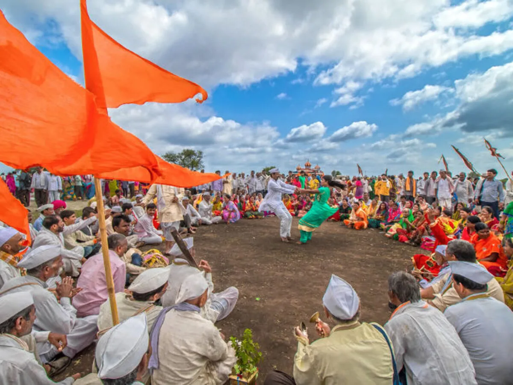
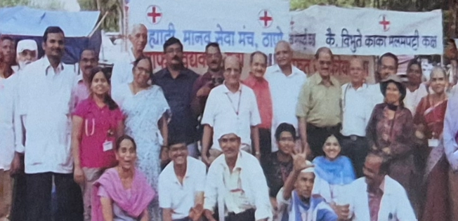
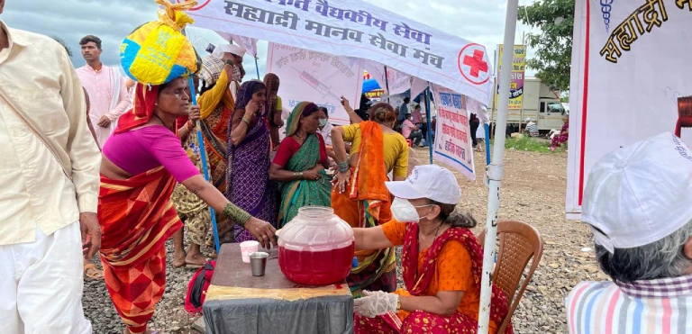
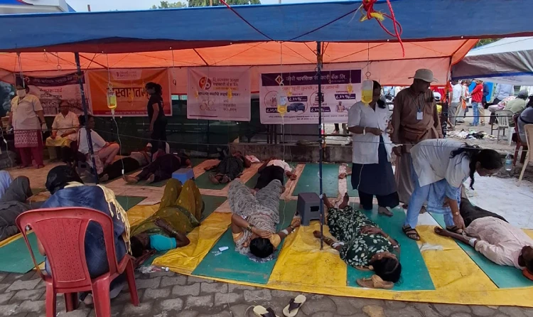

सह्याद्री मानव सेवा मंचची आरोग्यवारी
A Journey of Faith
Thousands of people called varkari reach Pandharpur from Alandi and Dehu after walking for about 250km in Aashad Ekadashi. They walk with palkhis carrying padukas of the saints singing sacred songs. Warkari is a sampradaya within the bhakti spiritual tradition of Hinduism, geographically associated with the Indian state of Maharashtra. Warkaris worship Vitthal, the presiding deity of Pandharpur, regarded as a form of Krishna.
This walk is not just an escape from reality for lakhs of people. It is something that keeps them focused and connected to a power bigger than them. People spend 21 days on the road withering bad weather with no luxuries... This is not a walk of blind faith, but the Pandharpur Waari is a walk of love and showing respect to Lord Vitthal.
Mission in Action



Make a Contribution

Instant Receipt
You will securely receive an automated receipt directly on the phone number used for the transaction.
"Thank you for making a difference. Your generous support provides essential healing, comfort, and care to communities who need it most — from remote tribal villages to the sacred Wari pilgrimage."
Become a Volunteer
Every camp we run depends on people who choose to show up. Doctors, nurses, students, and dedicated citizens — there is a place for you here.
Medical Professionals
Lend your skills at tribal camps, disaster sites, and along the Wari route.
Field Volunteers
Help with camp logistics, supply distribution, and on-ground coordination.
Education & Outreach
Support school health check-ups, awareness lectures, and material distribution.
Our Leadership
Guided by steadfast devotion and professional excellence, our trustees ensure that every donation translates directly into impactful medical aid — for tribal villages, disaster-affected communities, and Varkaris alike.
Service to those in need is service to the divine. We strive to provide the highest standard of care wherever our communities need us most.
Dr. Anjali K. Deshmukh
Managing Trustee & CMO
With over 25 years of experience in public health, Dr. Deshmukh coordinates the organisation's entire medical strategy, ensuring standardised care protocols across tribal health camps, disaster relief efforts, and the annual Aarogyawari pilgrimage service.
Mr. Prakash M. Patil
Trustee & Logistics Head
A veteran in large-scale event management, Mr. Patil oversees the complex logistics of setting up mobile camps, supply chains, and volunteer deployment across every region the organisation serves — from remote tribal villages to the 250 km Wari route.